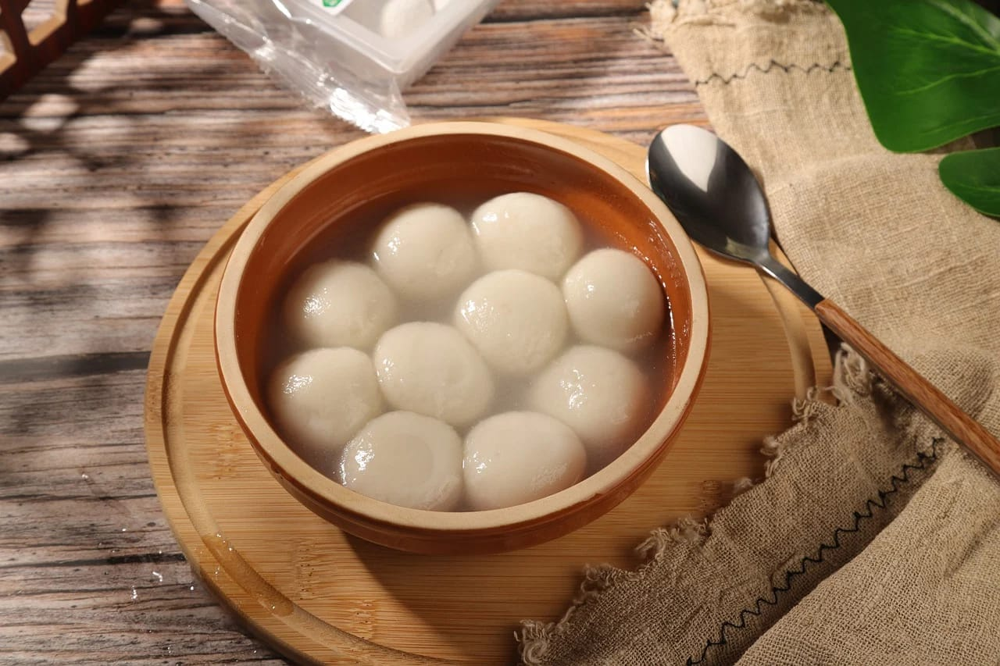

Bakso Ikan Khas Banten
Bakso ikan merupakan salah satu kuliner khas Indonesia yang menggugah selera. Biasanya, bakso ikan terbuat dari daging ikan yang diolah menjadi bola kenyal dan disajikan dengan kuah gurih.
Berbeda dari bakso daging sapi atau ayam, bakso ikan memiliki tekstur yang lebih lembut dan halus. Jenis ikan yang digunakan sebagai bahan baku bakso ikan dapat mempengaruhi cita rasanya.
Beberapa ikan yang sering digunakan untuk bakso ikan antara lain ikan nila, mas, tawes, cunang layur, tuna, tenggiri, dan kakap.
Bahan-bahan:
- 500 gr daging ikan tenggiri
- 4 siung bawang putih
- Es batu yang sudah diserut atau dipecahkan
- 3 sdm tepung sagu atau tepung tapioka
- Bawang putih - 3 siung, cincang halus
- 2 butir telur ayam (diambil putih telurnya saja)
- 2 sdm gula pasir
- Garam - secukupnya
- Kecap manis - 2 sendok makan
- Merica - secukupnya
- Bawang Merah goreng
- Air - secukupnya
Bahan Kuah Bakso:
- 1/2 kg tulang sapi atau tetelan sapi
- 12 siung bawang putih
- Satu bungkus kaldu sapi
- Garam - secukupnya
- Merica - secukupnya
- Air - secukupnya
Cara Memasak:
- Masukkan daging ikan tenggiri yang sudah dibersihkan ke dalam food processor atau mesin bakso bersama dengan putih telur, garam, gula pasir, dan es serut sedikit saja. Kemudian haluskan semua bahan sampai benar-benar halus.
- Tuangkan adonan ke dalam wadah, lalu masukkan tepung sagu atau tepung tapioka sambil diaduk-aduk sampai merata.
- Uleni searah jarum jam sampai semua bahannya tercampur rata. Tepung sagu atau tepung tapioka bisa ditambahkan sedikit demi sedikit kalau adonannya masih terlalu lembek.
- Siapkan panci dan rebus air bersih secukupnya sampai mendidih, kemudian matikan apinya.
- Bentuk adonan bakso tadi dengan dengan menggunakan genggaman tangan dan tekan sampai membentuk bulatan-bulatan.
- Ambil adonan bakso di atas dengan sendok makan dan masukkan ke dalam air panas di dalam panci yang sudah direbus. Ulangi sampai adonan bakso ikannya habis.
- Kalau sudah, rebus lagi bakso dengan menggunakan api sedang sampai bakso ikannya mengambang dan matang.
- Setelah matang, segera angkat dan tiriskan.
Cara Memasak Kuah Bakso:
- Siapkan panci dan isi air bersih secukupnya.
- Masukkan tetelan dan tulang sapi, rebus sampai empuk atau kurang lebih selama 60 menit. Selama proses pemasakan buang kotoran yang mungkin menempel dan mengambang.
- Siapkan penggorengan dan beri minyak secukupnya untuk menumis.
- Masukkan bawang putih yang sudah dicincang halus, tumis sampai tercium bau harum, kemudian matikan.
- Masukkan tumisan bawang putih bersama dengan kaldu sapi, garam, dan merica bubuk ke dalam panci berisi kuah rebusan kaldu.
- Aduk-aduk supaya semua bahan tercampur rata sampai mendidih kemudian matikan apinya. Bakso ikan tenggiri siap disajikan bersama kuahnya yang lezat.